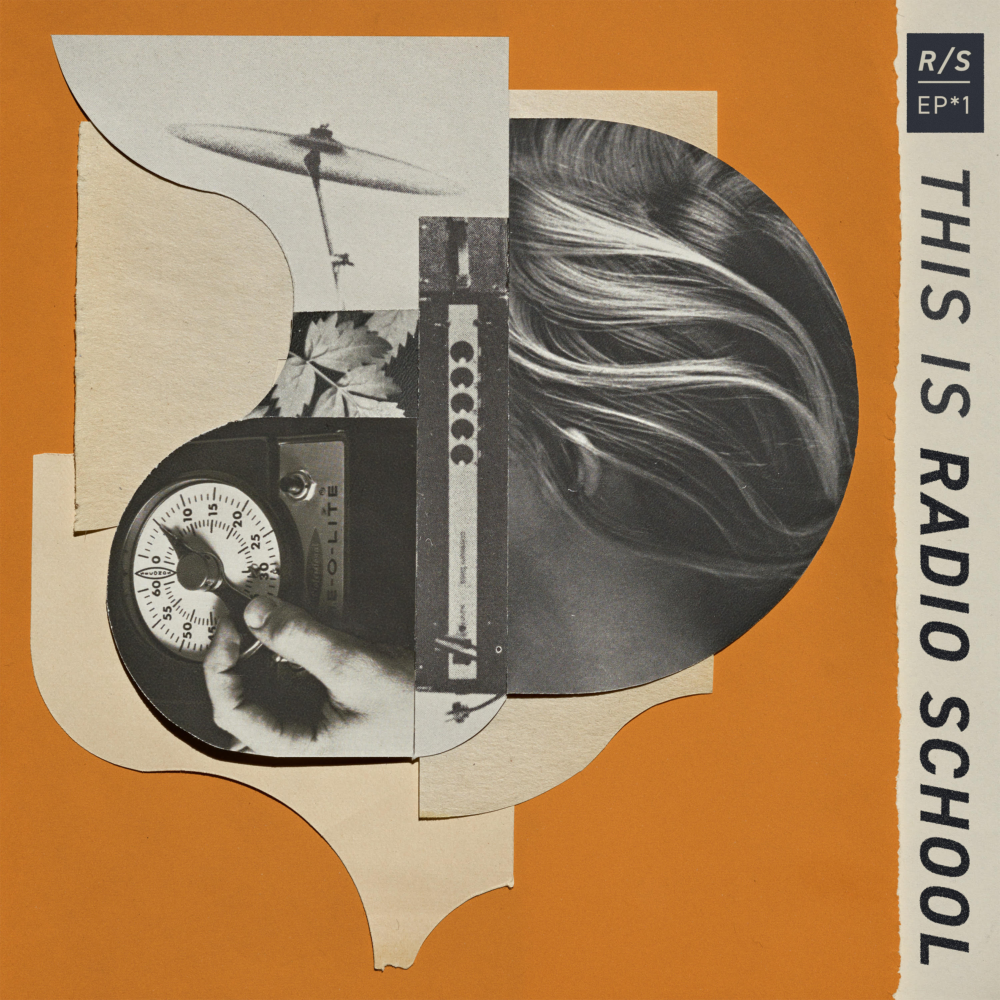

Listen

About
Radio School is a Seattle outfit featuring Kim Miller (vocals and bass; formerly of Stiletto), Alan Foote (guitar and vocals; formerly of Black Whales) and Erin Tate (drums; formerly of Minus the Bear and Kill Sadie).
The band's Seattle roots are omnipresent but not overstated. Though you can hear a ton of '90s underground influence, they've forsaken nostalgia for something new entirely.
Miller's lyrics are delivered via trancelike vocals that oscillate wildly between sweet and lethal, powering through a landscape of slick bass lines, dreamy guitars and heavy-hitting drums.
One thing is for certain: Radio School does not do things with a light touch.
Their debut EP, This is Radio School, recorded at Laundry Room Studio by legendary Seattle-area producer Barrett Jones (Nirvana, Foo Fighters), was released earlier this year and can be found wherever you stream your music.
Links
Live


Click any photo to download the full-size file.
Booking
For shows, press and everything else:
thisisradioschool@gmail.com